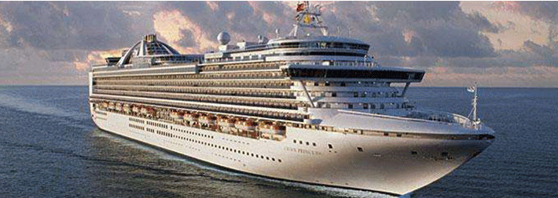

创立于公元1965年的公主邮轮公司（PRINCESS CRUISES）是全世界规模最大、服务最好的邮轮公司之一，旗下有19艘超过10万吨的豪华邮轮，其航线涉足全球200多个风景如画知名港口。公主邮轮公司是现今世界上餐饮、娱乐与游览于一体并为游客提供灵活选择的高级邮轮公司。
公主邮轮因她的现代化和豪华创新而在世界邮轮界享负盛名，单在2007年，公主邮轮已引领百多万游客游历其精彩纷呈的旅游线路，抵达的风景胜地遍布北美的阿拉斯加、加勒比海、欧洲、巴拿马运河、墨西哥里维埃拉、南太平洋、南美、夏威夷、亚洲，以及加拿大和新英格兰
和谐号